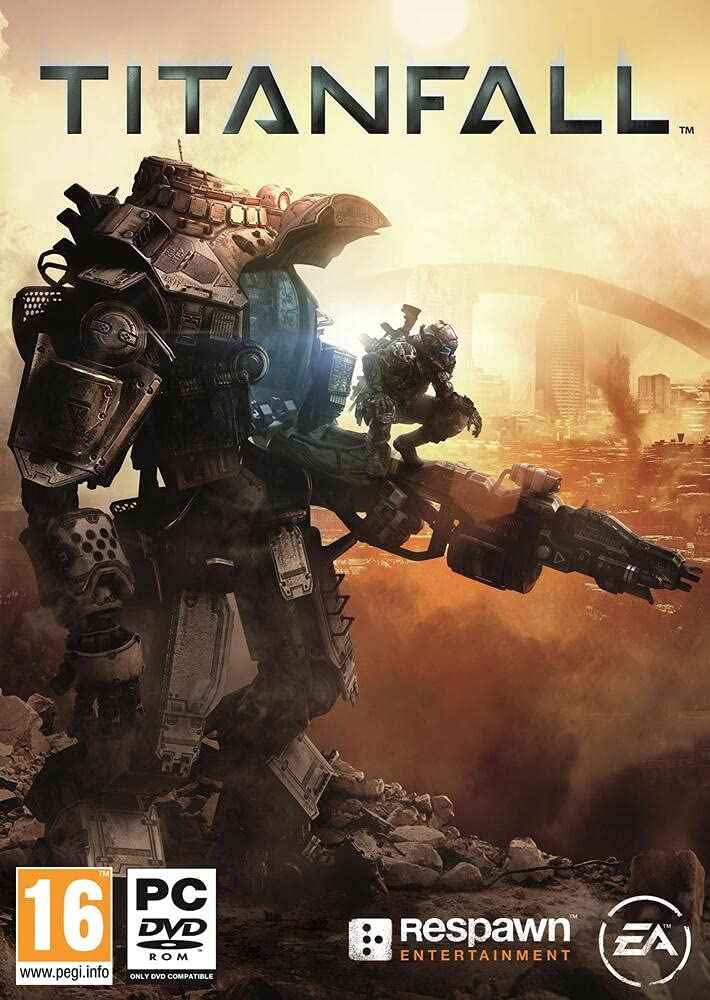
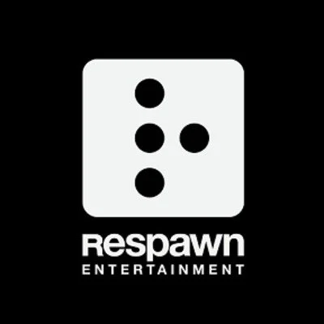
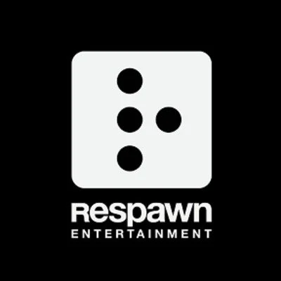

Titanfall 2
- Armi
- C.A.R.
- R-201
- P-2016
- Scudi
- Rossi
- Gialli
- Blu
- Nemici
- Normali
- Corazzati
- Titan
- Alleati
- Personaggi
- Soldati
- Titan
- Granate
- Thermite
- Normale
- Stella
- Mappe
- Missioni
- Multiplayer
- Poligono

DESCRIZIONE
Pilota e Titan si uniscono come mai prima d'ora nell'attesissimo Titanfall 2 di
Respawn Entertainment. Con una nuova campagna per giocatore singolo che esplora il
legame unico tra uomo e macchina, e accompagnato da un'esperienza multigiocatore
più articolata rispetto a quella del suo predecessore, Titanfall 2 offre un'azione
frenetica piena di sviluppi esaltanti.
CARATTERISTICHE
Gameplay avanzato e pieno d'azione - Che tu combatta nei panni di un pilota, dei
velocissimi guardiani d'élite della Frontiera, o a bordo di un Titan, macchine da
guerra alte sei metri, Titanfall 2 garantisce sempre un'esperienza di combattimento
divertente, fluida ed emozionante.
Avvincente campagna a giocatore singolo - Entra nel mondo della Frontiera come un
fuciliere della milizia che aspira a diventare un pilota. Bloccato dietro le
linee nemiche e contro un destino avverso, dovrai unire le forze con un Titan
veterano di classe Vanguard e affrontare una missione che non avreste mai dovuto
svolgere.
Azione multigiocatore più articolata - Caratterizzato da sei nuovissimi Titan, una
serie di tecnologie letali inedite e nuove abilità per piloti, Titanfall 2 dà ai
fan l'esperienza Multiplayer che avevano richiesto.
Gioca con gli amici o stringi nuove amicizie - Grazie all'introduzione dei
Network, in Titanfall 2 sarà più facile e veloce giocare con amici vecchi e
nuovi. Che sia sociale o competitivo, i giocatori potranno creare e unirsi a
numerosi Network, scegliendo quelli che si adattano meglio allo stile e alle
preferenze di gioco.
 
